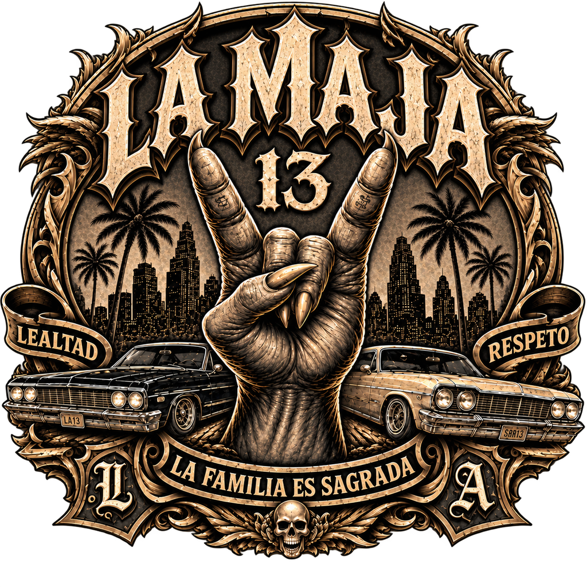

01
Lealtad
La loyauté représente le fondement même du groupe. Une fois les couleurs portées, l'engagement devient total : chaque recrue doit prouver sa valeur et sa capacité à placer la famille avant ses propres intérêts.

La Maja 13Los Santos · Flashback FA · Est. 13
Lealtad · Respeto · La familia es sagrada
Une famille forgée par la rue, du barrio de San Salvador aux quartiers de Los Santos. On y entre rarement par hasard… et on n'en repart que les pieds devant.
De San Salvador a Los Santos
Le groupe trouve ses origines dans les rues de San Salvador, où la pauvreté et la violence dictent le destin de toute une génération. Sans avenir, Hector et Santiago sont enrôlés dès leur plus jeune âge dans un gang, contraints de vivre au rythme des vols, des rackets et du sang.
Des années plus tard, la répression menée par le nouveau gouvernement bouleverse leur monde. Traqués et condamnés à une mort ou une prison certaine, ils fuient leur pays pour rejoindre Los Santos.
Loin de leur terre natale, ils tentent de repartir de zéro. Mais les valeurs forgées par la rue, les liens de fraternité et leur passé criminel ne disparaissent jamais.
À leur arrivée à Los Santos, Hector et Santiago découvrent une ville où chacun cherche à imposer son nom. Sans argent, sans alliés et sans territoire, ils comprennent rapidement qu'ils devront reconstruire tout ce qu'ils ont perdu. Une chose n'a pourtant jamais changé : les règles de la rue.
Les premiers mois sont difficiles. Ils survivent grâce aux petits trafics, aux extorsions et aux activités clandestines, gagnant progressivement le respect par leur détermination et leur discipline. Leur réputation grandit à mesure que leur nom commence à circuler dans les quartiers de Los Santos.
Autour d'eux, ils rassemblent des jeunes abandonnés, des immigrés latino-américains et des individus cherchant une place dans un monde qui ne leur a jamais donné leur chance. Pour eux, le gang représente plus qu'un simple moyen de survie : c'est une identité, une protection et une famille.
Avec le temps, Maja 13 cherche à construire son influence dans la ville. Leur objectif n'est pas seulement de contrôler des territoires, mais de bâtir une véritable identité : une organisation avec ses codes, ses traditions et son propre héritage. À travers la musique, la culture latino et la rue, ils souhaitent laisser une empreinte durable sur Los Santos.
« Pour Hector et Santiago, la Maja 13 n'est pas seulement un groupe : c'est un héritage, une famille forgée par la rue, où l'on entre rarement par hasard… et où l'on ne repart que les pieds devant. »
Ce qui fait tenir la famille
La loyauté représente le fondement même du groupe. Une fois les couleurs portées, l'engagement devient total : chaque recrue doit prouver sa valeur et sa capacité à placer la famille avant ses propres intérêts.
Le respect se gagne. Au sein de la Maja 13, chacun connaît sa place : les anciens transmettent les règles, les plus jeunes apprennent à les respecter.
La parole donnée a une valeur supérieure à l'argent. Dans les rues de Los Santos, la réputation du gang repose sur cette discipline et cette capacité à rester soudé face aux menaces.
La trahison est l'une des plus graves offenses. Celui qui met en danger la famille, vend des informations ou tourne le dos au groupe perd toute protection et devient un ennemi.
Jerarquía — cada uno conoce su lugar
Dirige l'ensemble de l'organisation. Définit les objectifs, les alliances et les règles. A le dernier mot sur toutes les opérations.
Bras droit du Jefe. Assure la gestion quotidienne, fait le lien avec les Commandantes et supervise les opérations.
Coordonne les Commandantes, veille au respect des règles et de la discipline, participe aux décisions stratégiques.
Dirige une équipe sur le terrain, organise et mène les opérations quotidiennes, accompagne les nouveaux membres.
Exécute les missions confiées par les Commandantes, encadre les Soldados et assure la réussite des actions à risque.
Participe aux opérations, respecte les ordres et la hiérarchie, représente l'organisation par son comportement et progresse vers les grades supérieurs.
Marrón coquillage & nacré blanc puro
Chaque membre garde son propre style, tant qu'il respecte le thème latino du groupe et intègre les couleurs de la familia dans sa tenue. Une identité visuelle cohérente, pas un uniforme.
Donner du jeu à la ville — nos scénarios RP
Une mystérieuse récompense a été cachée quelque part dans Los Santos. Chaque équipe reçoit un premier indice menant à une personne cachée dans la ville, qui lui remet le suivant… jusqu'au gardien du Speedo Mystère, qui n'en livrera l'emplacement qu'après une ultime énigme : un code secret à quatre chiffres.
Une importante cargaison est arrivée discrètement au port de Cayo Perico. Un groupe indépendant est mandaté pour la transporter jusqu'à un entrepôt sécurisé de Rockwood. Mais une fuite a eu lieu : un second groupe sait qu'un transfert va avoir lieu, et compte bien intercepter les deux Speedo avant leur arrivée.
Un courtier du marché noir possède une marchandise de grande valeur. Après des semaines de négociations, un groupe obtient un rendez-vous dans un lieu discret… mais une information anonyme parvient aux forces de l'ordre, qui interviennent en plein échange.
Devenir une petite frappe majeure et reconnue du serveur, contrôler une zone de revendication et une zone économique, bâtir une organisation interne stable et autonome — et, à terme, monter un label de musique latino géré par des criminels : lancer de nouveaux artistes, les produire, et collaborer avec LS Event pour créer des concerts.
Hablar como en el barrio
Intégrer le groupe n'est jamais un simple choix. Chaque recrue doit prouver sa valeur, sa loyauté et sa capacité à placer la familia avant ses propres intérêts. Certains rejoignent les rangs par ambition, d'autres par nécessité — mais une fois les couleurs portées, l'engagement devient total.
Rejoindre le DiscordLos Santos · Flashback FA · Hector Palma (Jefe) & Santiago Cardenas (Segundo)